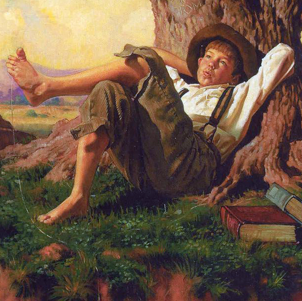

Похождения Тома Сойера

Том передал кисть с неохотой на лице, с весельем в сердце. И пока бывший пароход "Большой Миссури" трудился и потел на солнце, удалившийся артист сидел в тени на кадушке, болтал ногами, жевал яблоко и обдумывал планы улавливания других простаков. Недостатка в материале не было; мальчики подходили один за другим: они начинали с насмешки, а кончали тем, что принимались белить. Когда Бен наработался и ушел, Том уступил очередь Билли Фишеру за бумажного змея, вполне исправного; а когда насладился Билли, его сменил Джони Миллер за дохлую крысу и веревочку, на которой ее можно было раскачивать; и так далее, час за часом. Так что к середине дня Том, еще утром неимущий бедняк, буквально утопал в богатстве. У него оказались, кроме тех вещей, которые я назвал,
двенадцать шариков,
часть органчика,
кусок синего бутылочного стекла, в которое можно было смотреть,
катушка,
ключ, которым нельзя было ничего открыть,
кусок мыла,
стеклянная пробка от графина,
оловянный солдатик,
пара головастиков,
шесть хлопушек,
одноглазый котенок,
медная ручка от двери,
ошейник для собаки, но без собаки,
рукоятка перочинного ножа,
четыре апельсиновые корки и
старый изломанный оконный переплет.
Все время он благодушествовал, сложа руки, в компании, а забор между тем покрылся тройным слоем белил! Если бы известка не вышла, он разорил бы всех мальчиков в деревне.